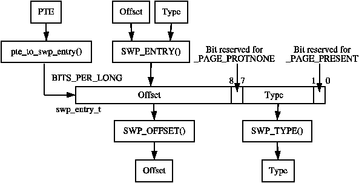
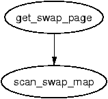
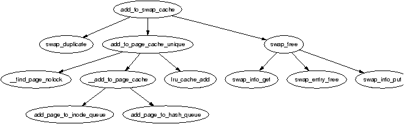
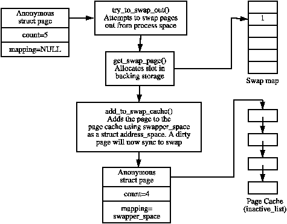
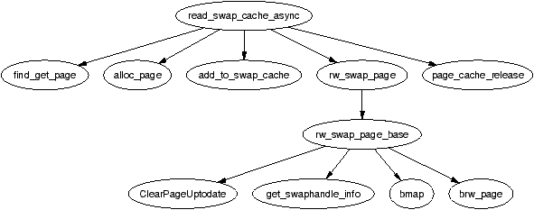
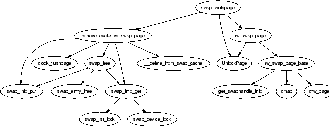

Just as Linux uses free memory for purposes such as buffering data from disk, there eventually is a need to free up private or anonymous pages used by a process. These pages, unlike those backed by a file on disk, cannot be simply discarded to be read in later. Instead they have to be carefully copied to backing storage, sometimes called the swap area. This chapter details how Linux uses and manages its backing storage.
Strictly speaking, Linux does not swap as “swapping” refers to coping an entire process address space to disk and “paging” to copying out individual pages. Linux actually implements paging as modern hardware supports it, but traditionally has called it swapping in discussions and documentation. To be consistent with the Linux usage of the word, we too will refer to it as swapping.
There are two principle reasons that the existence of swap space is desirable. First, it expands the amount of memory a process may use. Virtual memory and swap space allows a large process to run even if the process is only partially resident. As “old” pages may be swapped out, the amount of memory addressed may easily exceed RAM as demand paging will ensure the pages are reloaded if necessary.
The casual reader1 may think that with a sufficient amount of memory, swap is unnecessary but this brings us to the second reason. A significant number of the pages referenced by a process early in its life may only be used for initialisation and then never used again. It is better to swap out those pages and create more disk buffers than leave them resident and unused.
It is important to note that swap is not without its drawbacks and the most important one is the most obvious one; Disk is slow, very very slow. If processes are frequently addressing a large amount of memory, no amount of swap or expensive high-performance disks will make it run within a reasonable time, only more RAM will help. This is why it is very important that the correct page be swapped out as discussed in Chapter 10, but also that related pages be stored close together in the swap space so they are likely to be swapped in at the same time while reading ahead. We will start with how Linux describes a swap area.
This chapter begins with describing the structures Linux maintains about each active swap area in the system and how the swap area information is organised on disk. We then cover how Linux remembers how to find pages in the swap after they have been paged out and how swap slots are allocated. After that the Swap Cache is discussed which is important for shared pages. At that point, there is enough information to begin understanding how swap areas are activated and deactivated, how pages are paged in and paged out and finally how the swap area is read and written to.
Each active swap area, be it a file or partition, has a struct swap_info_struct describing the area. All the structs in the running system are stored in a statically declared array called swap_info which holds MAX_SWAPFILES, which is statically defined as 32, entries. This means that at most 32 swap areas can exist on a running system. The swap_info_struct is declared as follows in <linux/swap.h>:
64 struct swap_info_struct {
65 unsigned int flags;
66 kdev_t swap_device;
67 spinlock_t sdev_lock;
68 struct dentry * swap_file;
69 struct vfsmount *swap_vfsmnt;
70 unsigned short * swap_map;
71 unsigned int lowest_bit;
72 unsigned int highest_bit;
73 unsigned int cluster_next;
74 unsigned int cluster_nr;
75 int prio;
76 int pages;
77 unsigned long max;
78 int next;
79 };
Here is a small description of each of the fields in this quite sizable struct.
The areas, though stored in an array, are also kept in a pseudo list called swap_list which is a very simple type declared as follows in <linux/swap.h>:
153 struct swap_list_t {
154 int head; /* head of priority-ordered swapfile list */
155 int next; /* swapfile to be used next */
156 };
The field swap_list_t→head is the swap area of the highest priority swap area in use and swap_list_t→next is the next swap area that should be used. This is so areas may be arranged in order of priority when searching for a suitable area but still looked up quickly in the array when necessary.
Each swap area is divided up into a number of page sized slots on disk which means that each slot is 4096 bytes on the x86 for example. The first slot is always reserved as it contains information about the swap area that should not be overwritten. The first 1 KiB of the swap area is used to store a disk label for the partition that can be picked up by userspace tools. The remaining space is used for information about the swap area which is filled when the swap area is created with the system program mkswap. The information is used to fill in a union swap_header which is declared as follows in <linux/swap.h>:
25 union swap_header {
26 struct
27 {
28 char reserved[PAGE_SIZE - 10];
29 char magic[10];
30 } magic;
31 struct
32 {
33 char bootbits[1024];
34 unsigned int version;
35 unsigned int last_page;
36 unsigned int nr_badpages;
37 unsigned int padding[125];
38 unsigned int badpages[1];
39 } info;
40 };
A description of each of the fields follows
MAX_SWAP_BADPAGES is a compile time constant which varies if the struct changes but it is 637 entries in its current form as given by the simple equation;
MAX_SWAP_BADPAGES = (PAGE_SIZE - 1024 - 512 - 10) / sizeof(long)
Where 1024 is the size of the bootblock, 512 is the size of the padding and 10 is the size of the magic string identifing the format of the swap file.
When a page is swapped out, Linux uses the corresponding PTE to store enough information to locate the page on disk again. Obviously a PTE is not large enough in itself to store precisely where on disk the page is located, but it is more than enough to store an index into the swap_info array and an offset within the swap_map and this is precisely what Linux does.
Each PTE, regardless of architecture, is large enough to store a swp_entry_t which is declared as follows in <linux/shmem_fs.h>
16 typedef struct {
17 unsigned long val;
18 } swp_entry_t;
Two macros are provided for the translation of PTEs to swap entries and vice versa. They are pte_to_swp_entry() and swp_entry_to_pte() respectively.
Each architecture has to be able to determine if a PTE is present or swapped out. For illustration, we will show how this is implemented on the x86. In the swp_entry_t, two bits are always kept free. On the x86, Bit 0 is reserved for the _PAGE_PRESENT flag and Bit 7 is reserved for _PAGE_PROTNONE. The requirement for both bits is explained in Section 3.2. Bits 1-6 are for the type which is the index within the swap_info array and are returned by the SWP_TYPE() macro.
Bits 8-31 are used are to store the offset within the swap_map from the swp_entry_t. On the x86, this means 24 bits are available, “limiting” the size of the swap area to 64GiB. The macro SWP_OFFSET() is used to extract the offset.
To encode a type and offset into a swp_entry_t, the macro SWP_ENTRY() is available which simply performs the relevant bit shifting operations. The relationship between all these macros is illustrated in Figure 11.1.

Figure 11.1: Storing Swap Entry Information in swp_entry_t
It should be noted that the six bits for “type” should allow up to 64 swap areas to exist in a 32 bit architecture instead of the MAX_SWAPFILES restriction of 32. The restriction is due to the consumption of the vmalloc address space. If a swap area is the maximum possible size then 32MiB is required for the swap_map (224 * sizeof(short)); remember that each page uses one short for the reference count. For just MAX_SWAPFILES maximum number of swap areas to exist, 1GiB of virtual malloc space is required which is simply impossible because of the user/kernel linear address space split.
This would imply supporting 64 swap areas is not worth the additional complexity but there are cases where a large number of swap areas would be desirable even if the overall swap available does not increase. Some modern machines2 have many separate disks which between them can create a large number of separate block devices. In this case, it is desirable to create a large number of small swap areas which are evenly distributed across all disks. This would allow a high degree of parallelism in the page swapping behaviour which is important for swap intensive applications.
All page sized slots are tracked by the array swap_info_struct→swap_map which is of type unsigned short. Each entry is a reference count of the number of users of the slot which happens in the case of a shared page and is 0 when free. If the entry is SWAP_MAP_MAX, the page is permanently reserved for that slot. It is unlikely, if not impossible, for this condition to occur but it exists to ensure the reference count does not overflow. If the entry is SWAP_MAP_BAD, the slot is unusable.

Figure 11.2: Call Graph: get_swap_page()
The task of finding and allocating a swap entry is divided into two major tasks. The first performed by the high level function get_swap_page(). Starting with swap_list→next, it searches swap areas for a suitable slot. Once a slot has been found, it records what the next swap area to be used will be and returns the allocated entry.
The task of searching the map is the responsibility of scan_swap_map(). In principle, it is very simple as it linearly scan the array for a free slot and return. Predictably, the implementation is a bit more thorough.
Linux attempts to organise pages into clusters on disk of size SWAPFILE_CLUSTER. It allocates SWAPFILE_CLUSTER number of pages sequentially in swap keeping count of the number of sequentially allocated pages in swap_info_struct→cluster_nr and records the current offset in swap_info_struct→cluster_next. Once a sequential block has been allocated, it searches for a block of free entries of size SWAPFILE_CLUSTER. If a block large enough can be found, it will be used as another cluster sized sequence.
If no free clusters large enough can be found in the swap area, a simple first-free search starting from swap_info_struct→lowest_bit is performed. The aim is to have pages swapped out at the same time close together on the premise that pages swapped out together are related. This premise, which seems strange at first glance, is quite solid when it is considered that the page replacement algorithm will use swap space most when linearly scanning the process address space swapping out pages. Without scanning for large free blocks and using them, it is likely that the scanning would degenerate to first-free searches and never improve. With it, processes exiting are likely to free up large blocks of slots.
Pages that are shared between many processes can not be easily swapped out because, as mentioned, there is no quick way to map a struct page to every PTE that references it. This leads to the race condition where a page is present for one PTE and swapped out for another gets updated without being synced to disk thereby losing the update.
To address this problem, shared pages that have a reserved slot in backing storage are considered to be part of the swap cache. The swap cache is purely conceptual as it is simply a specialisation of the page cache. The first principal difference between pages in the swap cache rather than the page cache is that pages in the swap cache always use swapper_space as their address_space in page→mapping. The second difference is that pages are added to the swap cache with add_to_swap_cache() instead of add_to_page_cache().

Figure 11.3: Call Graph: add_to_swap_cache()
Anonymous pages are not part of the swap cache until an attempt is made to swap them out. The variable swapper_space is declared as follows in swap_state.c:
39 struct address_space swapper_space = {
40 LIST_HEAD_INIT(swapper_space.clean_pages),
41 LIST_HEAD_INIT(swapper_space.dirty_pages),
42 LIST_HEAD_INIT(swapper_space.locked_pages),
43 0,
44 &swap_aops,
45 };
A page is identified as being part of the swap cache once the page→mapping field has been set to swapper_space which is tested by the PageSwapCache() macro. Linux uses the exact same code for keeping pages between swap and memory in sync as it uses for keeping file-backed pages and memory in sync as they both share the page cache code, the differences are just in the functions used.
The address space for backing storage, swapper_space uses swap_ops for it's address_space→a_ops. The page→index field is then used to store the swp_entry_t structure instead of a file offset which is it's normal purpose. The address_space_operations struct swap_aops is declared as follows in swap_state.c:
34 static struct address_space_operations swap_aops = {
35 writepage: swap_writepage,
36 sync_page: block_sync_page,
37 };
When a page is being added to the swap cache, a slot is allocated with get_swap_page(), added to the page cache with add_to_swap_cache() and then marked dirty. When the page is next laundered, it will actually be written to backing storage on disk as the normal page cache would operate. This process is illustrated in Figure 11.4.

Figure 11.4: Adding a Page to the Swap Cache
Subsequent swapping of the page from shared PTEs results in a call to swap_duplicate() which simply increments the reference to the slot in the swap_map. If the PTE is marked dirty by the hardware as a result of a write, the bit is cleared and the struct page is marked dirty with set_page_dirty() so that the on-disk copy will be synced before the page is dropped. This ensures that until all references to the page have been dropped, a check will be made to ensure the data on disk matches the data in the page frame.
When the reference count to the page finally reaches 0, the page is eligible to be dropped from the page cache and the swap map count will have the count of the number of PTEs the on-disk slot belongs to so that the slot will not be freed prematurely. It is laundered and finally dropped with the same LRU aging and logic described in Chapter 10.
If, on the other hand, a page fault occurs for a page that is “swapped out”, the logic in do_swap_page() will check to see if the page exists in the swap cache by calling lookup_swap_cache(). If it does, the PTE is updated to point to the page frame, the page reference count incremented and the swap slot decremented with swap_free().
This function allocates a slot in a swap_map by searching active swap areas. This is covered in greater detail in Section 11.3 but included here as it is principally used in conjunction with the swap cache int add_to_swap_cache(struct page *page, swp_entry_t entry) This function adds a page to the swap cache. It first checks if it already exists by calling swap_duplicate() and if not, is adds it to the swap cache via the normal page cache interface function add_to_page_cache_unique() struct page * lookup_swap_cache(swp_entry_t entry) This searches the swap cache and returns the struct page corresponding to the supplied entry. It works by searching the normal page cache based on swapper_space and the swap_map offset int swap_duplicate(swp_entry_t entry) This function verifies a swap entry is valid and if so, increments its swap map count void swap_free(swp_entry_t entry) The complement function to swap_duplicate(). It decrements the relevant counter in the swap_map. When the count reaches zero, the slot is effectively free
Table 11.1: Swap Cache API
The principal function used when reading in pages is read_swap_cache_async() which is mainly called during page faulting. The function begins be searching the swap cache with find_get_page(). Normally, swap cache searches are performed by lookup_swap_cache() but that function updates statistics on the number of searches performed and as the cache may need to be searched multiple times, find_get_page() is used instead.

Figure 11.5: Call Graph: read_swap_cache_async()
The page can already exist in the swap cache if another process has the same page mapped or multiple processes are faulting on the same page at the same time. If the page does not exist in the swap cache, one must be allocated and filled with data from backing storage.
Once the page is allocated with alloc_page(), it is added to the swap cache with add_to_swap_cache() as swap cache operations may only be performed on pages in the swap cache. If the page cannot be added to the swap cache, the swap cache will be searched again to make sure another process has not put the data in the swap cache already.
To read information from backing storage, rw_swap_page() is called which is discussed in Section 11.7. Once the function completes, page_cache_release() is called to drop the reference to the page taken by find_get_page().
When any page is being written to disk, the address_space→a_ops is consulted to find the appropriate write-out function. In the case of backing storage, the address_space is swapper_space and the swap operations are contained in swap_aops. The struct swap_aops registers swap_writepage() as it's write-out function.

Figure 11.6: Call Graph: sys_writepage()
The function swap_writepage() behaves differently depending on whether the writing process is the last user of the swap cache page or not. It knows this by calling remove_exclusive_swap_page() which checks if there is any other processes using the page. This is a simple case of examining the page count with the pagecache_lock held. If no other process is mapping the page, it is removed from the swap cache and freed.
If remove_exclusive_swap_page() removed the page from the swap cache and freed it swap_writepage() will unlock the page as it is no longer in use. If it still exists in the swap cache, rw_swap_page() is called to write the data to the backing storage.
The top-level function for reading and writing to the swap area is rw_swap_page(). This function ensures that all operations are performed through the swap cache to prevent lost updates. rw_swap_page_base() is the core function which performs the real work.
It begins by checking if the operation is a read. If it is, it clears the uptodate flag with ClearPageUptodate() as the page is obviously not up to date if IO is required to fill it with data. This flag will be set again if the page is successfully read from disk. It then calls get_swaphandle_info() to acquire the device for the swap partition of the inode for the swap file. These are required by the block layer which will be performing the actual IO.
The core function can work with either swap partition or files as it uses the block layer function brw_page() to perform the actual disk IO. If the swap area is a file, bmap() is used to fill a local array with a list of all blocks in the filesystem which contain the page data. Remember that filesystems may have their own method of storing files and disk and it is not as simple as the swap partition where information may be written directly to disk. If the backing storage is a partition, then only one page-sized block requires IO and as there is no filesystem involved, bmap() is unnecessary.
Once it is known what blocks must be read or written, a normal block IO operation takes place with brw_page(). All IO that is performed is asynchronous so the function returns quickly. Once the IO is complete, the block layer will unlock the page and any waiting process will wake up.
As it has now been covered what swap areas are, how they are represented and how pages are tracked, it is time to see how they all tie together to activate an area. Activating an area is conceptually quite simple; Open the file, load the header information from disk, populate a swap_info_struct and add it to the swap list.
The function responsible for the activation of a swap area is sys_swapon() and it takes two parameters, the path to the special file for the swap area and a set of flags. While swap is been activated, the Big Kernel Lock (BKL) is held which prevents any application entering kernel space while this operation is been performed. The function is quite large but can be broken down into the following simple steps;
At the end of the function, the BKL is released and the system now has a new swap area available for paging to.
In comparison to activating a swap area, deactivation is incredibly expensive. The principal problem is that the area cannot be simply removed, every page that is swapped out must now be swapped back in again. Just as there is no quick way of mapping a struct page to every PTE that references it, there is no quick way to map a swap entry to a PTE either. This requires that all process page tables be traversed to find PTEs which reference the swap area to be deactivated and swap them in. This of course means that swap deactivation will fail if the physical memory is not available.
The function responsible for deactivating an area is, predictably enough, called sys_swapoff(). This function is mainly concerned with updating the swap_info_struct. The major task of paging in each paged-out page is the responsibility of try_to_unuse() which is extremely expensive. For each slot used in the swap_map, the page tables for processes have to be traversed searching for it. In the worst case, all page tables belonging to all mm_structs may have to be traversed. Therefore, the tasks taken for deactivating an area are broadly speaking;
The most important addition to the struct swap_info_struct is the addition of a linked list called extent_list and a cache field called curr_swap_extent for the implementation of extents.
Extents, which are represented by a struct swap_extent, map a contiguous range of pages in the swap area into a contiguous range of disk blocks. These extents are setup at swapon time by the function setup_swap_extents(). For block devices, there will only be one swap extent and it will not improve performance but the extent it setup so that swap areas backed by block devices or regular files can be treated the same.
It can make a large difference with swap files which will have multiple extents representing ranges of pages clustered together in blocks. When searching for the page at a particular offset, the extent list will be traversed. To improve search times, the last extent that was searched will be cached in swap_extent→curr_swap_extent.